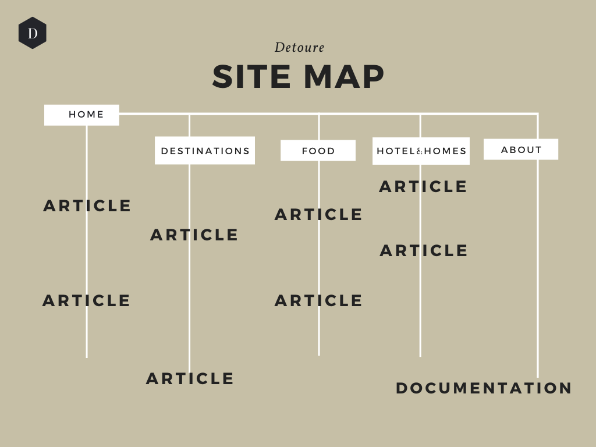

Follow Detoure on its journey:
Web Project Plan
Detoure è un sito di intrattenimento che tratta di viaggi e che si pone come obiettivo principale quello di intrattenere il lettore con contenuti originali e innovativi, che si ispirano a The Sims 4 (un videogioco di simulazione di vita). Essi si rifanno in tutto per tutto a contenuti realizzati per la trattazione di eventi che accadono nel mondo reale, invece che in un mondo virtuale come quello di The Sims.
Il sito si rivolge agli appassionati e ai frequentatori del settore, che, dalla lettura, potrebbero trarre spunti d'ispirazione per nuove idee da integrare nella propria esperienza di gioco.
Project Management Plan
Benchmarking
1. Tema: contenuti “fan-made” che prendono ispirazione dal videogioco “The Sims 4”.
2. Obiettivi: semplicità e intuitività per quanto riguarda la navigazione; dispersione minima durante la lettura, garantita dalla presenza di informazioni chiare e concise.
3. Target utente: sito di intrattenimento per il quale il target individuato è composto principalmente dai giocatori di The Sims 4 e dagli appassionati del genere (in maggioranza giovani donne dai 16 ai 30 anni).
4. Competitors: Dopo un accurato lavoro di ricerca, è risultato che per quanto riguarda la tipologia dei contenuti non vi sono attualmente competitors.
Se, invece, si considera il format del sito che tratta di viaggi, tra i numerosi competitors presenti nel mercato, ho scelto di analizzarne due (thepetitpassport.com e theblodeabroad.com).
1. thepetitpassport.com →
- completezza delle informazioni fornite: ⭐⭐
- usabilità: ⭐⭐⭐
Il target utente è principalmente composto da giovani (18-30 anni) appassionati di design d’interni.
Le informazioni sono presentate in maniera molto chiara e concisa, il design minimale contribuisce a facilitare la lettura.
2. theblondeabroad.com →
- completezza delle informazioni fornite: ⭐⭐⭐
- usabilità: ⭐
Il target consta di giovani donne (18-30) con la passione di viaggiare.
Le informazioni sono molto complete e ricche di particolari, ma la presenza di così tanti contenuti risulta dispersiva e disorientante.
(primo criterio (completezza):⭐ = poche informazioni, ⭐⭐ = informazioni nella media, ⭐⭐⭐ = informazioni complete / secondo criterio (usabilità):⭐= dispersiva, confusionaria, ⭐⭐ = abbastanza chiara, ⭐⭐⭐ = semplice e intuitiva)
Struttura e layout
1. Architettura del sito:

1. SITEMAP
2. Wireframe:
2. HOME
3. DESTINATIONS
4. FOOD
5. HOTELS&HOMES
6. ABOUT
7. DOCUMENTAZIONE
8. ARTICOLO
3. Look and feel:
9. PALETTE COLORI
Per quanto riguarda la scelta dei font, ho optato per dei sans-serif che stessero bene insieme e che rendessero piacevole l'esperienza di lettura, come Advent Pro e Roboto.
La palette colori si compone di quattro elementi:
- #F5EBDF: per il background delle pagine, dato che è un colore neutro caldo che non stanca l'occhio;
- #0f113d: presente nelle sezioni dell’header e del footer come colore di sfondo, nel colore del nome del sito e nel logo, nei titoli principali;
- #A92E3B: presente nel logo del sito e nel colore del testo dei link al passaggio del cursore sopra di essi;
- nero: per il testo degli articoli, rende la lettura più agevole ed evita di affaticare la vista.
Gli elementi caratterizzanti il sito, che si ripetono nelle varie pagine sono:
- la parte blu in alto contenente le icone dei social;
- il logo del sito (nome + immagine);
- l'elemento di navigazione che mediante link porta alle pagine principali (home, destinations, food, hotel&homes e about);
- la sezione del footer.
Linguaggi e strumenti
1. Linguaggi: HTML5, CSS, JavaScript
2. Strumenti a supporto della progettazione web: Google Fonts per i font, FontAwesome per le icone, Canva per la realizzazione grafica del logo, della sitemap e della palette colori, Bootstrap per la creazione di carousels e griglie di immagini, Sublime Text 3 per la scrittura del codice, Balsamiq per la creazione dei wireframes e GitHub per la pubblicazione del sito.
Communication Strategy
Background
Sulla base del benchmarking effettuato, i competitors precedentemente analizzati hanno scelto di presentare i rispettivi contenuti in modi differenti. Petitepassport.com ha fatto della semplicità di navigazione e del design minimale il suo tratto distintivo, creando un sito di facile e piacevole consultazione; mentre Theblondeabroad.com, preferendo privilegiare la quantità e la completezza delle informazioni, ha finito per sacrificare l'usabilità del sito, che risulta molto caotico e disorientante.
Dunque, nella creazione di Detoure ho scelto di porre particolare cura e attenzione nella sua usabilità, in modo che la navigazione del sito risulti semplice e intuitiva.
Per quanto riguarda la tipologia dei contenuti "fan-made", come già ricordato sopra, non vi sono attualmente competitors e ho deciso di sopperire a questa mancanza poiché ritengo che questo tipo di contenuti possa essere d'interesse e di intrattenimento per il target definito.
Obiettivi comunicativi
Gli obiettivi comunicativi delineati in seguito all'analisi dei competitors che ho deciso di rendere una priorità da raggiungere sono:
- semplicità, garantita dalla presenza di informazioni di facile comprensione per il target utente;
- esaustività, ottenuta grazie a informazioni complete, ma chiare e concise;
- poca dispersione nella fruizione del sito, resa possibile dall'utilizzo di immagini illustrative, link interni alle varie pagine e termini e frasi chiave in grassetto;
- coerenza nella grafica, che si presenta uguale per ogni pagina, in modo da non disorientare il lettore.
Target audience e messaggio
Il target primario individuato è composto principalmente dai giocatori di The Sims 4 e dagli appassionati del genere (in maggioranza giovani donne dai 16 ai 30 anni). Esso può essere raggiunto mediante la promozione degli articoli del sito sulle piattaforme social (Instagram, Pinterest, Twitter) maggiormente frequentate da questo tipo di personas.
Il target secondario è costituito dall'utente casuale che viene raggiunto dai post di promozione del sito pubblicati sulle piattaforme social sopracitate e che, per propria curiosità personale, decide di approfondire la lettura.
Ciò che desidero comunicare, tramite la mia passione per la scrittura creativa unita a quella dei videogiochi e dei viaggi, è che per sperimentare il piacere di viaggiare e di scoprire cose nuove non è necessario disporre di lunghi periodi di tempo, ma che, se lo si desidera davvero, è sempre possibile farlo anche con poco tempo a disposizione.
Nel fruitore del mio sito voglio suscitare curiosità e voglia di esplorare il mondo ogni volta che se ne presenta l’occasione, anche se, come in questo caso, si tratta di un mondo virtuale.
Promozione e valutazione dei risultati
La promozione del sito web avverrà on-line, mediante la creazione e pubblicazione di post e stories riguardanti gli articoli del sito sulle principali piattaforme social (Instagram, Twitter e Pinterest). Come risultato dell'attività promozionale mi aspetto il raggiungimento di oltre 50 visite da utenti unici.
Gli obiettivi comunicativi prefissati sono stati conseguiti e le 50 visite da utenti unici sono state raggiunte, e ciò è stato verificato grazie al servizio offerto da Google Analytics.
10. Google Analytics - Detoure